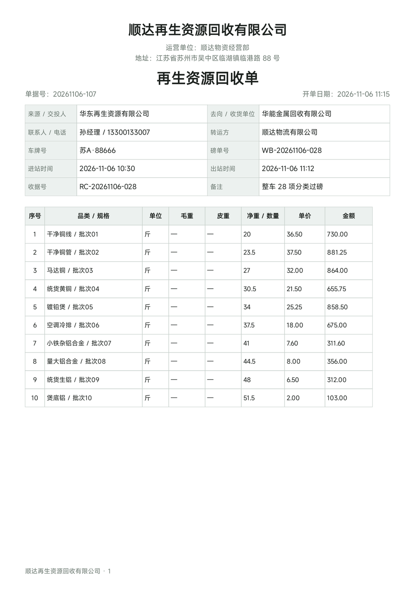

安卓 App · 无需注册 · 数据只存本机
一本手机里的生意账
开单、算钱、记收支、看统计，都在一个 App 里完成。不联网也能用，账本只存在你自己的手机里，不上传服务器。
- 不注册装好就能用
- 不联网现场断网照常开单
- 不上传数据只存本机
- 能备份换机、留底都方便
两个版本，按需选择
两款都是安卓手机 App，安装包通过迅雷网盘分享。点开链接后按提示下载 APK，覆盖安装不会丢数据。
功能对比
| 功能 | 回收专业版 | 通用版 |
|---|---|---|
| 适用业态 | 只做回收 / 收购 | 回收、零售店、混合经营 |
| 首次选择经营类型 | — | ✓ 回收 / 零售店 / 通用 |
| 支出单、收入单开单 | ✓ | ✓ |
| 品类价格、库存与预警 | ✓ | ✓ |
| 统计、本金、本地备份恢复 | ✓ | ✓ |
| 企业对接单与合规信息登记 | ✓ 来源、去向、车牌、磅单号等 | — |
| 正规回收单 / 出售单（A4） | ✓ | — |
| 作业台账与汇总表 | ✓ CSV / PDF / XLSX | — |
| 单据带上公司名称抬头 | ✓ | — |
| 两版备份文件互通 | 双向互通，换版本不用重录历史数据 | |
拿不准选哪个：只做回收、要和企业对账或报送台账，选专业版；还兼做零售、想自己选经营类型，选通用版。
界面一览
点图片可放大查看。画面中的品类、金额、企业名称均为演示数据。
正规单据与作业台账

企业对接单，一键出正规单据
开单时打开「企业对接单」开关，登记来源、去向、转运方、车牌、磅单号、收据号与进出站时间，就能导出 A4 正规回收单 / 出售单，供对账、盖章、归档。
台账按「订单 × 品类明细」逐笔展开，可按日期、方向、关键字筛选，导出 CSV、PDF、XLSX 三种格式用于报送与二次统计。
公司名称填好之后，正规单据与台账自动带上抬头，PDF 页脚也统一显示公司名；不填则不印任何抬头。
查看 A4 单据样例 PDF看视频，更快上手
使用教程 · 从激活到开单、导出、台账
宣传短片 · 快速了解能做什么
使用演示 · 选经营类型、开单、看账（含讲解）
下载与安装
点上方按钮打开迅雷分享页，下载 APK 到安卓手机。若提示「未知来源」，按系统提示允许本次安装即可。
打开 App，进入「设置 → 激活与授权」，复制页面上的 16 位设备码发给开发者，拿到授权码后粘贴激活。激活全程离线。
先填企业档案、录几个常收品类，就可以开单了。两版授权码不通用，请按所购版本索取。
升级不用卸载，原有品类、订单与设置都会保留，授权码继续有效。稳妥起见，升级前先在「设置 → 数据管理」做一次「备份全部数据」。两个版本的备份文件双向互通。
版本与更新
新版发布后，本页面会同步更新版本号与下载链接；已安装的用户按上面的覆盖安装方式升级即可。
说明书与资料
常见问题
苹果手机能用吗？
目前只提供安卓版安装包。iPhone 可以用浏览器打开本页查看介绍、说明书和视频，但开单、记账需要在安卓设备上完成。
要联网、要注册账号吗？
都不需要。数据只存在本机，不上传服务器；激活也是离线完成。
两个版本的授权码通用吗？
不通用。请在索取授权码时说明用的是「回收专业版」还是「通用版」。
换手机、重装怎么办？
先在旧机「备份全部数据」，把备份文件传到新机再「从备份恢复」，或用同 WiFi 分享迁移。授权码与设备码绑定，换机后需要重新取设备码联系开发者换发。
导出的单据和台账在哪里找？
在手机「文件管理」里依次打开：内部存储 → Documents → 生意账本 → 单据 / 台账 / 备份。导出成功后也可以直接用弹出的分享面板发送。
软件变成只读、不能开单了？
一般是试用或更新服务到期。已有数据仍可查看和导出，联系开发者续费后即可继续开单。
联系开发者
咨询版本选择、索取试用码 / 授权码、反馈问题或提优化建议，都可以直接联系。
本软件为独立开发，请尊重他人劳动成果、支持正版；未经授权请勿破解、复制或二次分发。